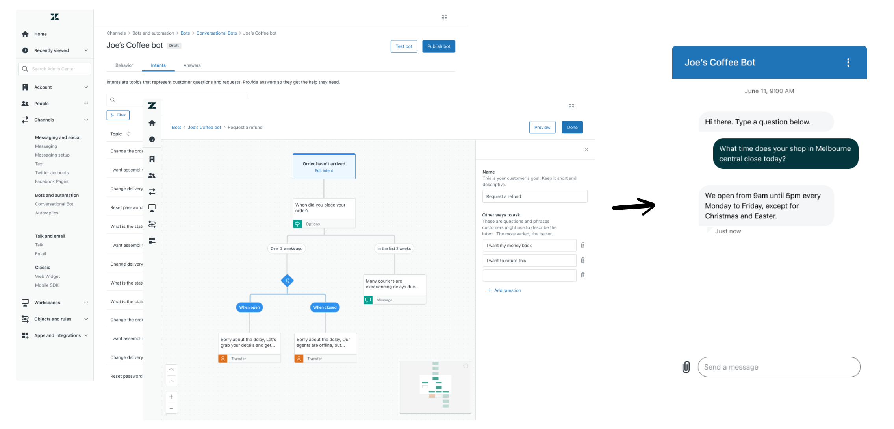

Zendesk offers a bot builder as part of its suite of tools, allowing businesses to publish chatbots to their website, app or social channels. These bots can handle common customer service requests. The builder was well received, but the bots were difficult to maintain, and often got confused, resulting in relatively low adoption.
I worked with a PM, Content strategist and Researcher to understand where customers were struggling, with the ultimate goal of increasing both the bots solve rate* and adoption among larger, enterprise customers.
The product manager and I undertook a number of early research activities, supported by a UX researcher.
Our bot builder interface was based on designing an end-to-end conversation as a single tree diagram. We’d initially assumed that customers would offer solutions to 5 or 6 common issues, then have a human handle the rest. Our research showed that this assumption was not only incorrect, but was the key issue holding back our product adoption.

Several interviewees shared spreadsheets with hundreds of topics they wanted the bot to handle, a much larger range than the bot was optimized for. Many were ‘hacking’ the interface in order to build huge, complex conversational diagrams.
We surmised that the current bot builder didn’t match the customer's mental model. Rather than building a single 'conversation', we needed to allow our admins to build a 'list of answers'
Over several working sessions, I shared a number of competitor approaches with product and engineering, borrowing the best parts from different competitors and mocking up how they might work in our interface.
The original assumption was that the bot builder would continue to function as a single large decision tree, but we quickly realised a more radical change was needed. We landed on removing the existing model entirely, in favour of multiple smaller flows, each one focused on a different customer request. The customer would type a question, and would be matched to the correct answer through our bot AI.

I created a number of variations on the design based on the experience for new, vs existing customers

As this was a significant change to how the product worked, we were forced to adapt the original design around some technical constraints. For example, It was very difficult to publish each flow independently. I shared the risks around this with engineering, and we compromised by adding a 'publish status' column and optional 'inactive' state for the first release.

The product manager and I also had regular consults with the data science team throughout the project, leading to a number of improvements to the design, most notably allowing admins to manually add training phrases. This boosted the bot's performance significantly, but the concept of training an AI was difficult to communicate to our users. The content strategist and I iterated on the design several times, over 2 rounds of user testing to get the messaging right.

Given the scale of the changes and the number of adjacent teams impacted by the work. I leaned heavily on video explainers (along with the usual Figma prototypes and diagrams) to share decisions, progress and collect feedback from key stakeholders.
We saw a significant uptick in adoption of the product by our key enterprise audience over the next 12 months, with the number of active bots increasing by 90%. Of those customers that adopted the bot, we also saw an increase in the bot’s effectiveness. The bot’s solve rate* for customers who had adopted the feature was more than double that of those using a single flow
* solve rate: % of conversation where a solution was found, and that weren’t later handed over to a human agent)
The product is currently in a closed beta and is scheduled for general release in Q2 of this year.